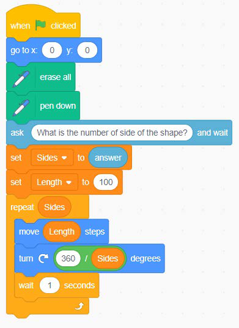
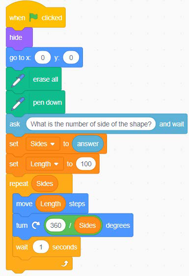

- 6. From the Sensing block, use the ask ( ) and wait block to prompt the user to enter the number of sides. Set the answer to the Sides variable using the set ( ) to ( ) block from the variables block.
- 7. From the Variables block, choose the set (variable name ) to ( ) block and use it to set the length to 100.
- 8. From the Controls block, choose the repeat ( ) block and add the Sides variable as the condition. Inside the body of the repeat ( ) block, add a block to move the sprite to the desired length, and a block to turn the sprite as shown in Figure 16 (a).
- 9. Click the green flag to start the program. You will be prompted to enter the number of sides. Try entering number 3.
- 10. Add a hide block to improve visibility of how the shape is created. Refer to Figure 16 (b).
Code blocks


Figure 16: Drawing different shapes